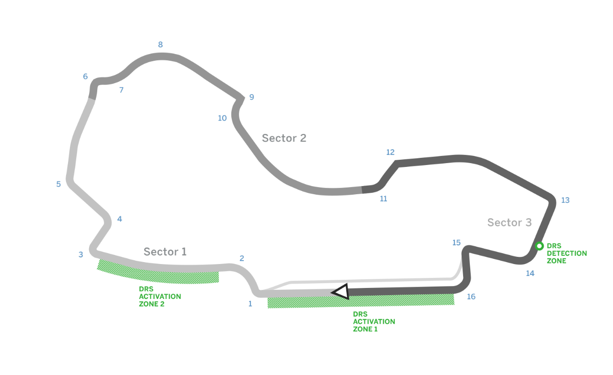

Grand Prix
Australian Grand Prix
The Melbourne Grand Prix Circuit is a street circuit around Albert Park Lake, only a few kilometres south of central Melbourne. It is used annually as a racetrack for the Formula One Australian Grand Prix, Supercars Challenge and associated support races. The circuit has FIA Grade 1 licence.In spite of being a circuit on public roads it has characteristics of a natural road course considering it being fast and flowing combined with extensive runoff in many corners.

Chinese Grand Prix
The Shanghai International Circuit is a motorsport race track, situated in the Jiading, Shanghai, People's Republic of China. The circuit is best known as the venue for the annual Formula 1 Chinese Grand Prix, which it first hosted in 2004.
Bahrain Grand Prix
The Bahrain International Circuit is a motorsport venue opened in 2004 and used for drag racing, GP2 Series and the annual Bahrain Grand Prix. The 2004 Grand Prix was the first held in the Middle East. Beginning in 2006, Australian V8 Supercars raced at the BIC, with the event known as the Desert 400. However, the V8 Supercars did not return for the 2011 V8 Supercar season. 24 Hour endurance races are also hosted at BIC. The circuit has a FIA Grade 1 license.

Russian Grand Prix
The Sochi Autodrom, previously known as the Sochi International Street Circuit[4] and the Sochi Olympic Park Circuit, is a 5.848 km Formula One racing street circuit in the Black Sea resort town of Sochi in Krasnodar Krai, Russia. The circuit is similar to the Beijing Olympic Green Circuit and the Sydney Olympic Park Circuit in that it runs around a former Olympic complex; in this case, the Sochi Olympic Park site, scene of the 2014 Winter Olympic Games. The inaugural World Championship Russian Grand Prix took place in 2014, beginning a seven-year contract. Also, the TCR International Series raced at Sochi in June 2015, with the TCR Russian Series and SMP F4 Championship as support series.

Spanish Grand Prix
The Circuit de Barcelona-Catalunya is a motorsport race track in Montmeló, Barcelona, Catalonia, Spain. With long straights and a variety of corners, the Circuit de Barcelona-Catalunya is seen as an all-rounder circuit. The track has stands with a capacity of 140,700. The circuit has FIA Grade 1 license.Until 2013 the track was known only as the Circuit de Catalunya, before a sponsorship deal with Barcelona City Council added Barcelona to the track's title.
Monaco Grand Prix
Circuit de Monaco is a street circuit laid out on the city streets of Monte Carlo and La Condamine around the harbour of the principality of Monaco. It is commonly referred to as "Monte Carlo" because it is largely inside the Monte Carlo neighbourhood of Monaco. The circuit is used on two weekends in the month of May of each year to host the Formula One Monaco Grand Prix and Formula E Monaco ePrix or Monaco Historic Grand Prix alternating yearly. Formula One's respective feeder series over the years – Formula Two, Formula 3000 and today the GP2 Series – also visit the circuit concurrently with Formula One.
Canadian Grand Prix
The Canadian Grand Prix of Formula One racing, which had taken place for 30 years at Circuit Gilles Villeneuve, was dropped from the 2009 Formula One calendar and replaced with the inaugural Abu Dhabi Grand Prix. On November 27, 2009, Quebec's officials and Canadian Grand Prix organizers announced a settlement with Formula One Administration and signed a new five-year contract spanning the 2010–2014 seasons.
Azerbaijan Grand Prix
The Baku City Circuit is a motor racing circuit in Baku, Azerbaijan constructed near Baku Boulevard. A lap of the circuit is 6.003 kilometres , making it the second-longest circuit on the Formula One calendar. It hosted the 2016 European Grand Prix and its support events.
Austrian Grand Prix
The race circuit was founded as Österreichring and hosted the Formula One Austrian Grand Prix for 18 consecutive years, from 1970 to 1987. It was later shortened, rebuilt and renamed the A1-Ring, and it hosted the Austrian Grand Prix again from 1997 to 2003. When Formula One outgrew the circuit, a plan was drawn up to extend the layout. Parts of the circuit, including the pits and main grandstand, were demolished, but construction work was stopped and the circuit remained unusable for several years before it was purchased by Red Bull's Dietrich Mateschitz and rebuilt. Renamed the Red Bull Ring the track was reopened on 15 May 2011 and subsequently hosted a round of the 2011 DTM season and a round of the 2011 F2 championship. Formula One returned to the circuit in the 2014 season.
British Grand Prix
Silverstone Circuit is a motor racing circuit in England next to the Northamptonshire villages of Silverstone and Whittlebury. The circuit straddles the Northamptonshire and Buckinghamshire border, with the current main circuit entry on the Buckinghamshire side. The Northamptonshire towns of Towcester (5 miles) and Brackley (7 miles) and Buckinghamshire town of Buckingham (6 miles) are close by, and the nearest large towns are Northampton and Milton Keynes. Silverstone is the current home of the British Grand Prix, which it first hosted in 1948. The 1950 British Grand Prix at Silverstone was the first race in the newly created World Championship of Drivers. The race rotated between Silverstone, Aintree and Brands Hatch from 1955 to 1986, but relocated permanently to Silverstone in 1987.

Hungarian Grand Prix
he Hungaroring is a motorsport race track in Mogyoród, Hungary where the Formula One Hungarian Grand Prix is held. In 1986, it became the location of the first Formula One Grand Prix behind the Iron Curtain. Bernie Ecclestone wanted a race in the USSR, but a Hungarian friend recommended Budapest. They wanted a street circuit similar to the Circuit de Monaco to be built in the Népliget – Budapest's largest park – but the government decided to build a new circuit just outside the city near a major highway. Construction works started on 1 October 1985. It was built in eight months, less time than any other Formula One circuit. The first race was held on 24 March 1986, in memory of János Drapál, the first Hungarian who won motorcycle Grand Prix races. According to a survey put together by the national tourism office of Hungary, Mogyoród ranks third among Hungarian destinations visited by tourists, behind the Danube Bend area and Lake Balaton, but ahead of Budapest. The circuit has FIA Grade 1 license.
Belgian Grand Prix
The Circuit de Spa-Francorchamps motor-racing circuit is the venue of the Formula One Belgian Grand Prix, and of the Spa 24 Hours and 1000 km Spa endurance races. It is also home to the all Volkswagen club event, 25 Hours of Spa, run by the Uniroyal Fun Cup. It is one of the most challenging race tracks in the world, mainly due to its fast, hilly and twisty nature. Spa is a favourite circuit of many racing drivers and fans. Despite its name, the circuit is not in Spa but lies in the vicinity of the town of Francorchamps within the boundaries of the municipality of Stavelot, with a part in the boundaries of Malmedy.
Italian Grand Prix
The Autodromo Nazionale Monza is a race track located near the city of Monza, north of Milan, in Italy. Built in 1922, it is the world's third purpose-built motor racing circuit after those of Brooklands and Indianapolis. The circuit's biggest event is the Formula One Italian Grand Prix. With the exception of 1980, the race has been hosted there since the series's inception.
Singapore Grand Prix
The Marina Bay Street Circuit (otherwise known as the Singapore Street Circuit) is a street circuit around Singapore's Marina Bay and is the venue for the Singapore Grand Prix. The track is 5.065 km long in a harbourside location similar in style to the Circuit de Monaco and the Valencia Street Circuit. The circuit is designed by KBR, Inc., a modification of the original one first proposed by Hermann Tilke.The circuit has FIA Grade 1 license. The circuit holds a unique record of having safety car appearance in every race to date. A total of 14 safety car deployments in nine races.
Malaysian Grand Prix
The Sepang International Circuit is a motorsport race track in Sepang, Selangor, Malaysia. It is located near Kuala Lumpur International Airport, approximately 45 km south of the capital city Kuala Lumpur. It was the venue used for the Formula One Malaysian Grand Prix through 2017, and still used for Malaysian Motorcycle Grand Prix, Malaysia Merdeka Endurance Race and other major motorsport events.
Japanase Grand Prix
The Suzuka International Racing Course (official name), Suzuka Circuit for short, is a motorsport race track located in Ino, Suzuka City, Mie Prefecture, Japan and operated by Mobilityland Corporation, a subsidiary of Honda Motor Co., Ltd.. It has a capacity of 155,000.
United States Grand Prix
Circuit of The Americas is a grade 1 FIA specification 3.427-mile (5.515 km) motor racing facility located in Elroy, on the southeastern periphery of Austin city limits, in Central Texas. COTA plays host to the Formula One United States Grand Prix. The circuit also hosts the Motorcycle Grand Prix of The Americas, commonly known as MotoGP, a round of the Road Racing World Championship, the FIA World Endurance Championship, as well as the WeatherTech SportsCar Championship. It previously hosted the Australian V8 Supercars series, the American Le Mans Series, and the Rolex Sports Car Series in 2013.

Mexican Grand Prix
The Autódromo Hermanos Rodríguez is a 4.304 km motorsport race track in Mexico City, Mexico, named after the racing drivers Ricardo and Pedro Rodríguez. The circuit got its name shortly after it opened when Ricardo Rodríguez died in practice for the non-Championship 1962 Mexican Grand Prix. Ricardo's brother Pedro also lost his life behind the wheel nine years later.
Brazilian Grand Prix
Autódromo José Carlos Pace, also known by its former name Interlagos, is a motorsport circuit located in the city of São Paulo, in the neighborhood of Interlagos, renamed after Carlos Pace, a Brazilian Formula One driver who had died in a 1977 plane crash. It is well known for being the venue of the Formula One Brazilian Grand Prix.
Abu Dhabi Grand Prix
The Yas Marina Circuit is the venue for the Abu Dhabi Grand Prix. The circuit was designed by Hermann Tilke, and is situated on Yas Island, about 30 minutes from the capital of the UAE, Abu Dhabi. Yas Marina is the second Formula One track in the Middle East, with the first being in Bahrain. A two-day GP2 Asia Series test was held to officially open the circuit, which was held a week before the 2009 Abu Dhabi Grand Prix. It also hosted the opening event for the Australian V8 Supercars series, the Yas V8 400, in February 2010. Outside motorsport the circuit was used for the final stage of the inaugural Abu Dhabi Tour cycle race in 2015. The circuit has FIA Grade 1 license.